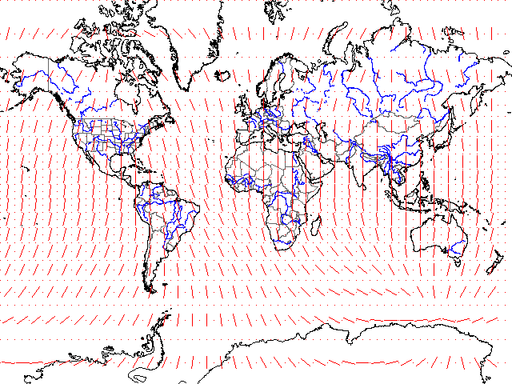

Magnetic Declination Overlay

In MICRODEM, you can overlay the magnetic declination from the Cartography menu choice of a map menu. You must have the cartography options enabled on the options form.
Last revision 12/14/2000